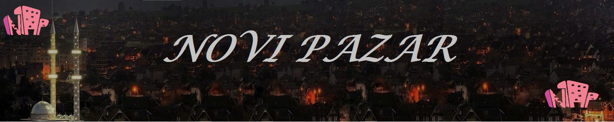
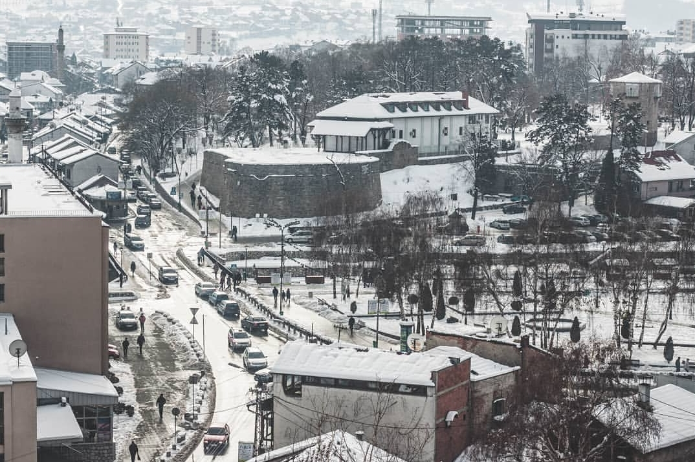
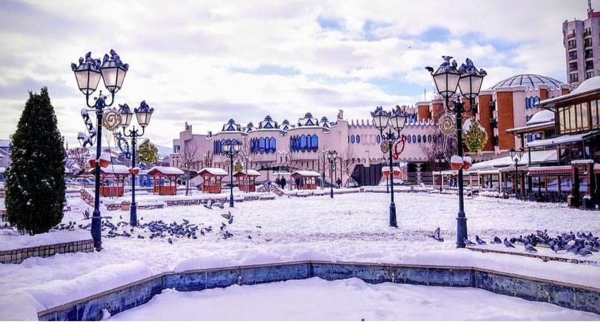

|  |
|---|
|  | Novi Pazar se nalazi u jugozapadnom delu Srbije. Novi Pazar ima 120000 stanovnika. Lociran je u zvjezdastoj dolini rijeka Jošanice, Raške, Deževske i Ljudske, na nadmorskoj visini od 496m. |
|---|---|
Okružen je visokim planinama Golijom i Rogoznom i Pešterskom visoravni. Ukupna površina opštine sa 100 naseljenih mjesta iznosi 742 km2. Njegov osnivač Isa-beg Ishaković je podigao grad u neposrednoj blizini srednjovjekovnog utvrđenja Trgovište, poznatog pod imenom Ras. |
 |